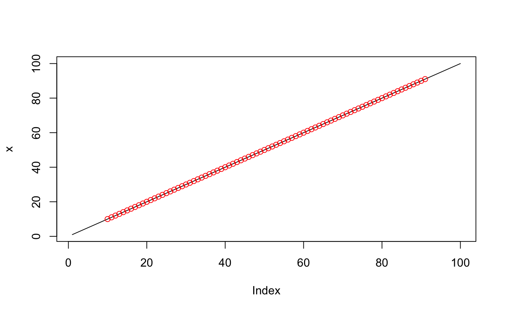
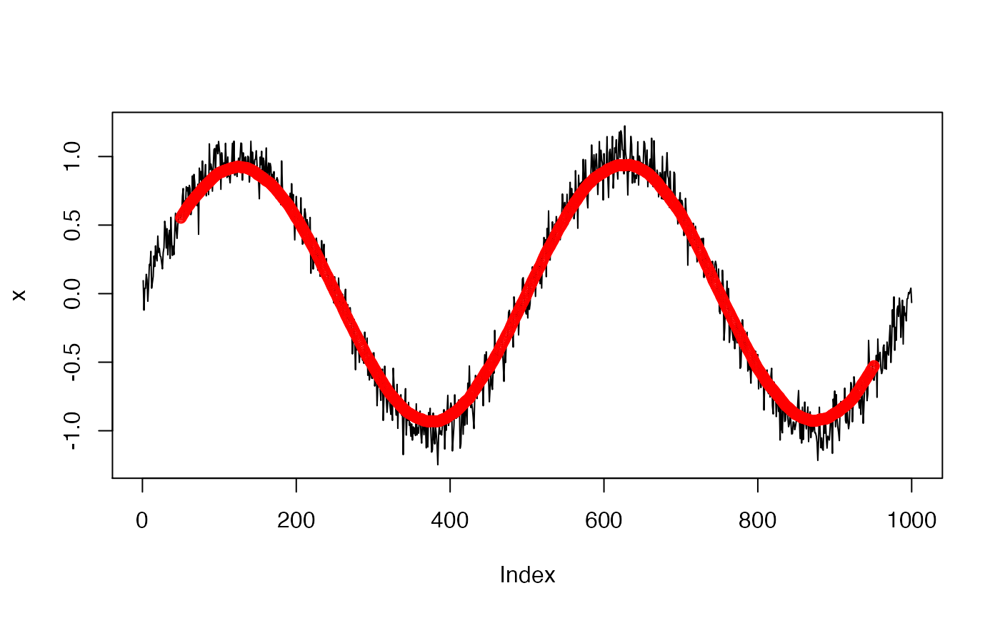

Compute moving window average of a time-series x.
windowSmooth(x, W, x.fs = 1)
| x | A numeric vector. A time-series for which a moving window average is computed. |
|---|---|
| W | A numeric scalar. A length of a moving window, expressed in time (seconds). |
| x.fs | Frequency of a time-series |
A numeric vector. Moving window average of a time-series x. Note:
head and tail of the
output vector where the moving window is undefined are filled with NA.
Time-series frequency x.fs and a length of a moving window (expressed in time) W
together determine
W.vl = round(W * x.fs), a length of a moving window expressed in a length of
x vector object.
Note: W.vl must be equal or greater than 3.
If W.vl < 3 then an error is thrown.
If W.vl is an even number then (W.vl-1) value is silently
used instead as a length of a moving window expressed in x vector length.
## Time-series defined as a function f(x) = x N <- 100 W <- 20 x <- 1:N x.smoothed <- windowSmooth(x, W) plot(x, type = "l")## Time-series defined as a function f(x) = sin(x) + noise N <- 1000 W <- 100 x <- sin(seq(0, 4 * pi, length.out = N)) + rnorm(N, sd = 0.1) x.smoothed <- windowSmooth(x, W) plot(x, type = "l")